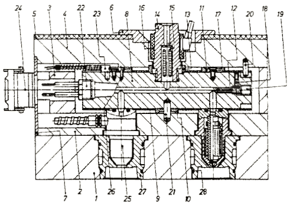
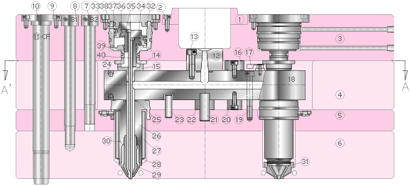
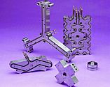
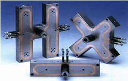

|
Erkan
Kahraman
Gazi Üniv. Teknik Eðitim Fak. Makine Böl.
Mayýs
2005
ÖZET
Son
yýllarda günümüz teknolojisinde hacim kalýplarýnda plastiklerin
þekillendirilmesi sýcak yolluk sisteminin önemli ölçüde enerji,
iþçilik ve malzeme kazançlarýnýn yanýnda bir çok avantajlar
getirmesi nedeniyle kullanýmý giderek artmaktadýr. Sýcak yolluk
sistemi saðladýðý avantajlarýn yaný sýra kendine has özellikleri
ve gereksinimleri vardýr. Bu makale; Sýcak yolluk sisteminin
genel tanýmý, ihtiyaçlarý ve avantajlarý literatür araþtýrmasý
yapýlarak hazýrlanmýþtýr.
1.
GÝRÝÞ
Sýcak
yolluk sistemi son yýllarda plastik enjeksiyon kalýpçýlýðýnda
soðuk yolluk (normal yolluk) sistemine göre daha fazla tercih
edilmeye baþlanmýþtýr. Plastik enjeksiyon kalýpçýlýðýnda sýcak
yolluðun soðuk yolluða göre daha fazla tercih edilmesini yüksek
kaliteli ürün alma isteði, daha kýsa sürede daha çok iþ yapabilme
ve iþçilik giderlerinin azaltýlmasý olarak þekilde kýsa özetleyebiliriz.
Sýcak
yolluk sistemi; Plastik enjeksiyon kalýplarýnda enjeksiyon
makinesinin memesinden plastik enjeksiyon kalýp gözüne kadar
ergimiþ plastik malzemeyi sýcaklýk, basýnç kaybý olmadan ve
hasara uðramadan kontrollü bir þekilde bekletme ve istenildiðinde
kalýp gözüne enjekte etme sistemidir. Þekil 1.'de sýcak yolluk
sistemini oluþturan baþlýca elemanlarý görebilmekteyiz (1).
|

|
|
Þekil
1. Sýcak yolluk sistemini oluþturan elemanlar (2).
|
1.
Kalýp gözü taþýyýcý plakasý
2. Ara plakasý
3. Destek plakasý
4. Baðlama (Sýkma) plakasý
5. Yalýtým (zolasyon) plakasý
6. Merkezleme halkasý
7. Takviye plakasý
8. Sýcak yolluk daðýtýcýsý (Manifold)
9. Isý reflektörü (reflektör plakasý)
10. Destek halkasý (rondela)
11. Destek halkasý (rondela)
12. Kapama tapasý
13. Merkezleme plakasý
14. Yolluk burcu
15. Filtre tertibatý (malzeme filtresi)
16. Isýtýcý (spiral rezistans)
17. Havþa baþlý vida
18. Vidalý emniyet pimi
19. Vidalý tapa
20. Silindirik saplama
21. Silindirik saplama
22. Yüksek güçlü ýsýtýcý (fiþek rezistans)
23. Termoeleman (sýcaklýk ölçer)
24. Baðlantý kutusu
25. Yüksek verimli meme
26. Metal O-Halkasý
27. Kalýp gözü tertibatý
28.O-Halkasý
2. SICAK YOLLUK SÝSTEMÝNDE KULLANILAN ELEMANLAR
Sýcak
yolluk sistemi için gerekli olan kullanýlan elemanlarý; Thermocoupler
(Sýcaklýk kontrol elemanlarý), Sýcaklýk kontrol cihazlarý,
Isýtýcýlar (Daðýtýcý ve meme ýsýtýcýlarý), Sýcak yolluk memesi
ve Sýcak yolluk daðýtýcýsý (manifold) olarak beþ ana gruba
ayýrabiliriz (Þekil 2). (1)
Þekil
2. Sýcak yolluk sisteminin kesiti (3)

Kaynak: www.yudo.com.tr
2.1.Manifold (Sýcak yolluk daðýtýcýsý):
Sýcak
yolluk daðýtýcýsýnýn (manifold Þekil 1-8) amacý, ergiyik plastik
malzemeyi yolluk burcundan (Þekil 1-14) alarak en az basýnç
kaybýyla ve ayný sýcaklýkta memelere (Þekil 1-25) iletimini
saðlamaktýr (4).
Enjekte edilmiþ malzeme ýsýtýcýlar ve termokupollar sayesinde
eriyik halde ve olumsuz sýcaklýk deðiþimi olmadan kalýr. Manifoldlar
genelde H, I ve X tipli olarak bulunmaktadýr (Þekil 3). Bazý
durmalarda bu temel tipleri kullanarak deðiþik kombinasyonlarda
manifold sistemleri oluþturulabilir. Manifold tipi belirlerken
hedef mümkün olduðu kadar eþit akýþ saðlamaktýr. Genelde ideal
manifold göz sayýlarý 2-4-8-16 ve 32'lidir. 3-6 ve 12'li gözler
dengesiz akýþa neden olduðu için tercih edilmez (4).


Þekil
3. Çeþitli manifold þekilleri (4)
|